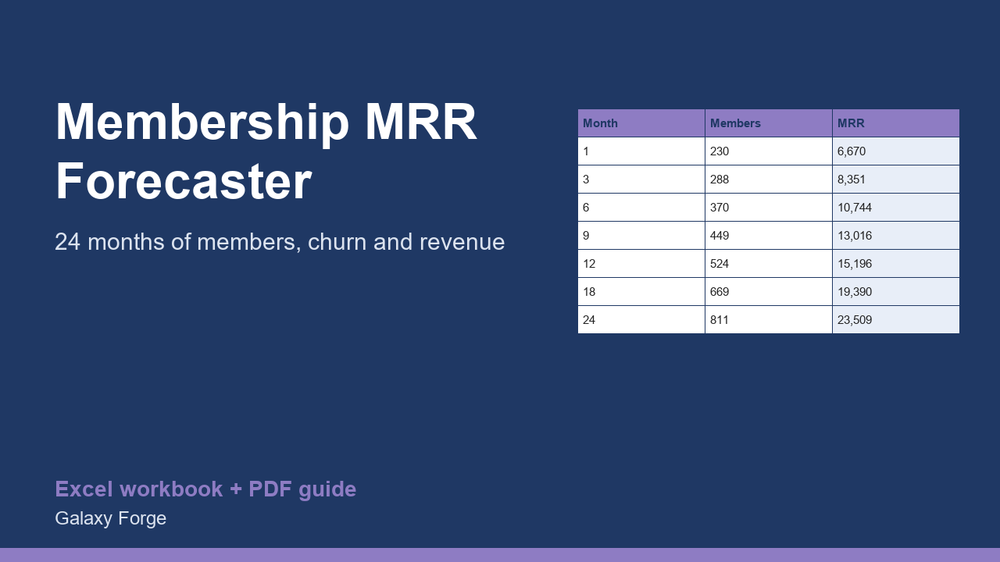

Project members, monthly recurring revenue and net revenue after fees for 24 months from your price, sign-ups, growth and churn, with the steady-state member count and customer lifetime value.
A membership, community or subscription business lives or dies on two numbers: how many people join each month and what share leave. Small changes in churn compound into very different member counts a year later.
This forecaster takes your starting members, price, monthly sign-ups, sign-up growth, churn and payment fees, and builds a 24-month projection of members, MRR, net revenue and cumulative revenue. It also shows the member count the business settles at if sign-ups stay flat (sign-ups divided by churn), the average member lifetime, and lifetime value per member.
Use it to test what cutting churn by one point is worth before you spend on acquisition.
1) On Settings, enter your starting members, monthly price, new members per month, the monthly growth in new sign-ups, monthly churn and payment fees. 2) Read Forecast for the month-by-month projection. 3) Read Summary for month 12 and 24, the steady state and lifetime value. Change churn and watch the steady state move.
Price: $15, one-time. Download: membership_subscription_mrr_churn_forecaster.xlsx (Settings, Forecast, Summary) and this guide. Works in Excel 2016 or later, Excel for Mac and Excel on the web; opens in Google Sheets and LibreOffice.
New product, listed 2026-10-29: no sales or reviews yet. Example figures in the workbook are illustrative.
This workbook is a forecasting tool, not financial, tax or investment advice. It projects from the assumptions you enter; real sign-ups and churn will differ month to month.